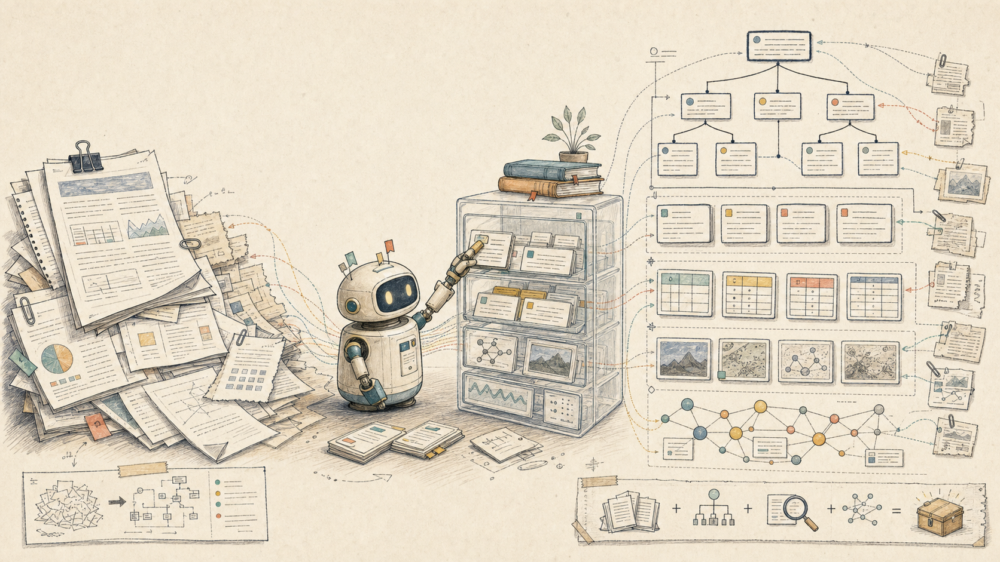
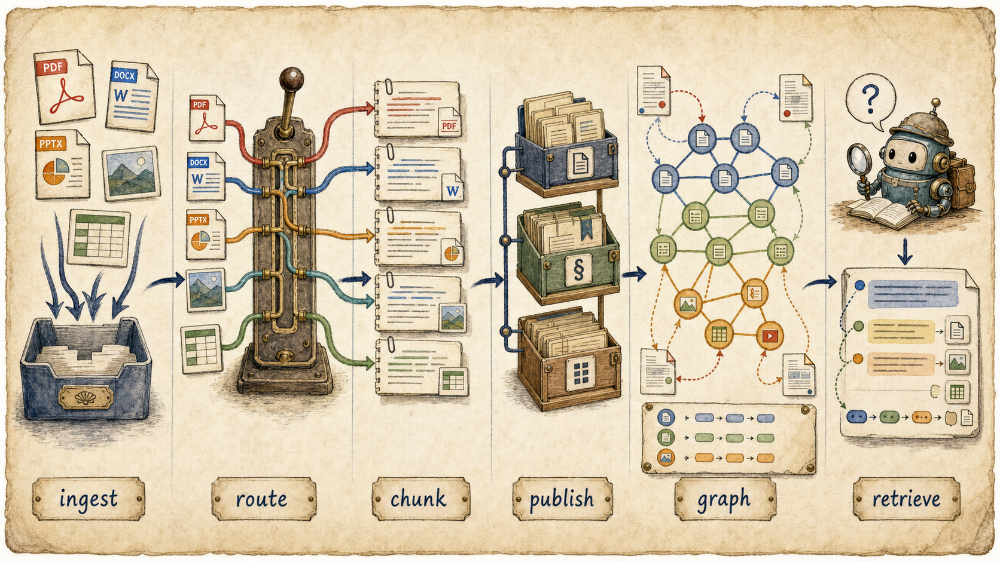
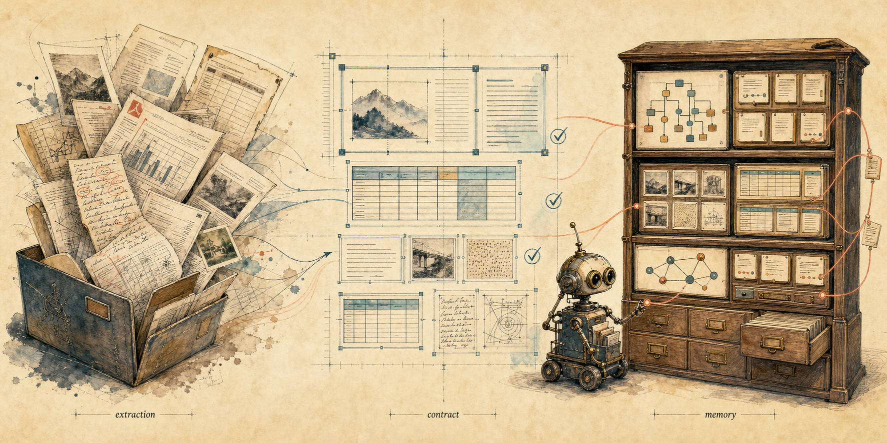

문서를 파싱한 다음, Agent는 무엇을 기억해야 할까
DocLang이 문서 구조 계약이라면, Knowhere는 그 구조를 검색 가능한 memory로 바꾸는 쪽에 가깝다.

DocLang 글 이후 남은 질문
이전 글에서는 DocLang을 “PDF를 더 잘 읽어주는 parser”가 아니라, parser 결과를 검증 가능한 문서 구조 계약으로 고정하는 중간표현으로 봤다. PDF나 DOCX를 읽는 일은 Docling, MinerU, OCR, VLM 같은 extraction layer가 맡는다. DocLang의 쓸모는 그 다음에 있었다. heading, table, location, page break 같은 문서 단위를 정해진 구조로 남기고, downstream RAG가 쓰기 전에 최소한의 structural mismatch를 잡는 일이다.
그 글을 쓰고 나니 다음 질문이 남았다.
문서 구조를 검증했다면, agent는 그걸 어떻게 기억하고 검색해야 할까?
이 질문에서 보면 Knowhere는 단순 parser나 vector DB wrapper라기보다, parser 이후의 문서를 agent가 다시 찾고 인용할 수 있는 document memory backend로 만들려는 시도에 가깝다. README의 표현을 빌리면 Knowhere는 “complex, dirty documents and AI agents 사이의 memory layer”를 지향한다. 문서를 한 번 Markdown으로 펴고 끝내는 것이 아니라, 문서 ingest, format별 parser routing, hierarchy 복원, chunk와 asset 정규화, document graph 구성, evidence-bearing retrieval까지 하나의 backend로 묶으려 한다.
이 글은 Knowhere를 직접 설치해 성능을 평가한 실험기가 아니다. README와 repo 문서를 읽고, 이전 DocLang 실험에서 남은 질문 — parser 이후 문서 구조는 어떻게 agent memory가 되는가 — 를 이어서 정리한 글이다. 그래서 초점도 “도입해도 되는 도구인가?”보다 “문서 AI 파이프라인에서 parser 다음에는 어떤 층이 필요한가?”에 있다.
DocLang과 Knowhere는 경쟁 관계가 아니다
DocLang과 Knowhere를 같은 칸에 놓고 비교하면 조금 이상해진다. 둘은 같은 문제를 풀지 않는다.
DocLang의 질문은 대략 이렇다.
문서 추출 결과를 어떤 공통 구조로 표현하고 검증할 것인가?Knowhere의 질문은 여기에 더 가깝다.
그렇게 얻은 문서 구조를 agent가 탐색하고 인용할 수 있는 memory로 어떻게 만들 것인가?이 차이를 나눠보면 역할이 선명해진다.
| 층 | 중심 질문 | 예시 |
|---|---|---|
| Parser / OCR / VLM | 원문 파일에서 텍스트, 표, 이미지, 레이아웃을 어떻게 뽑을 것인가 | Docling, MinerU, OCR, VLM extraction |
| 문서 구조 계약 | 뽑힌 결과를 어떤 schema와 validation 규칙으로 고정할 것인가 | DocLang XML, validator, location/table/heading 규칙 |
| 문서 memory backend | 그 구조를 section, chunk, asset, graph, retrieval surface로 어떻게 저장할 것인가 | Knowhere의 document/section/chunk graph와 agentic retrieval |
| Agent answer layer | 검색된 근거를 바탕으로 어떤 답변이나 작업 결과를 만들 것인가 | RAG answer, citation, 보고서 초안, 작업 노트 |
그래서 DocLang과 Knowhere는 경쟁 관계라기보다, 서로 다른 경계에 있다. DocLang은 “문서를 어떻게 표현하고 검증할 것인가”에 더 가깝고, Knowhere는 “그 구조를 어떻게 검색 가능한 memory로 바꿀 것인가”에 더 가깝다.
이전 DocLang 실험에서 만든 source_page, bbox, section_path, flags가 붙은 citation-friendly chunk도 같은 방향을 가리키고 있었다. Knowhere는 이 층을 backend 제품/오픈소스 stack으로 확장하려는 쪽에 있다.
“file → markdown → vector DB”가 부족해지는 지점
문서 RAG를 가장 단순하게 만들면 보통 이런 모양이 된다.
file
→ markdown/text
→ fixed-size chunks
→ vector DB
→ snippet 기반 답변짧은 글이나 단순 문서에는 이 방식도 충분할 때가 많다. 문제는 문서가 길고, 표와 이미지가 섞이고, 답변의 근거 위치가 중요해질 때다. 정책 문서, 공고문, 금융보고서, 제품 매뉴얼, 법무 문서처럼 섹션 구조가 중요한 문서에서는 fixed-size chunk가 section context를 자르고, 표나 이미지는 본문 claim과 분리되며, retrieval 결과는 근거 위치보다 snippet 중심으로 나오기 쉽다.
이전 DocLang 글에서 “Markdown은 사람이 읽기 좋지만 page/bbox와 QA flag가 약하다”고 쓴 이유도 여기에 있었다. Markdown은 좋은 최종 표현일 수 있지만, agent memory의 전부가 되기에는 정보가 너무 많이 평평해진다.
Knowhere는 이 평평함을 줄이려는 도구로 읽힌다. README는 Knowhere의 1단계를 Parse and Build Memory로 설명한다. 여기서 parse는 끝이 아니라 시작이다. PDF, Office 파일, 이미지, 표, Markdown, text를 format별 parser로 라우팅하고, 문서 hierarchy를 복원하고, chunk, navigation tree, summary, graph link를 agent-ready context로 저장한다. 관심의 중심이 “parser가 Markdown을 얼마나 예쁘게 만들었나”에서 “agent가 나중에 근거를 찾아 돌아올 수 있는 memory를 만들었나”로 이동한다.
Knowhere가 memory backend로 추가하는 것
Knowhere repo 문서를 보면 큰 흐름은 다음처럼 정리된다.

문서를 format별 parser로 라우팅한 뒤, chunk와 asset을 document/section 구조로 출판하고, graph와 evidence retrieval surface로 다시 꺼내는 흐름.
Document ingest
→ format-aware parser routing
→ parsed rows
→ chunk payload 변환
→ documents / sections / chunks publication
→ graph nodes / graph edges 구성
→ retrieval query
→ ranking + optional agentic workflow
→ cited evidence results구현 세부 이름보다 중요한 것은 경계다. Knowhere는 문서를 받아 parser에 넘기는 것에서 멈추지 않고, parsing, publication, retrieval을 나눠 다룬다. format-aware routing을 거친 결과를 document/section/chunk와 graph 구조로 출판하고, retrieval에서는 keyword, path, content, semantic signal을 섞어 traceable evidence를 돌려주는 쪽에 가깝다.
여기서 Knowhere가 말하는 memory는 단순히 embedding index가 아니다. 문서가 어디서 왔는지, 어떤 section tree 안에 있는지, 어떤 chunk와 asset으로 나뉘었는지, retrieval 결과가 어떤 evidence로 돌아오는지를 포함하는 저장 구조에 가깝다.
Knowhere README의 FAQ에는 MinerU와의 관계도 나온다. 요지는 “MinerU는 raw Markdown을 잘 만들고, Knowhere의 가치는 그 뒤의 hierarchy reconstruction, multi-modal normalization, cross-document graph construction에 있다”는 것이다. 좋은 parser는 여전히 중요하지만, parser가 Markdown을 잘 만들었다고 해서 agent memory가 자동으로 생기지는 않는다.
그 사이에는 별도의 shaping layer가 필요하다.
raw parser output
→ section path 복원
→ heading / paragraph / table / image / caption 정규화
→ chunk 단위 결정
→ source page / bbox / asset link 보존
→ document graph 구성
→ retrieval policy와 ranking signal 설계
→ cited evidence surface 제공DocLang 관점으로 다시 말하면, DocLang은 이 중 “문서 구조를 검증 가능한 표현으로 고정하는 층”에 가까웠다. Knowhere는 그 위 또는 옆에서 “그 구조를 agent가 쓰는 memory backend로 출판하는 층”을 맡으려 한다.
그래서 둘을 이어 그리면 이런 그림이 된다.

DocLang은 extraction 결과를 검증 가능한 contract로 고정하는 쪽에 가깝고, Knowhere는 그 구조를 검색·탐색·인용 가능한 memory backend로 출판하는 쪽에 가깝다.
PDF / DOCX / PPTX / image / URL
→ parser / OCR / VLM extraction
→ 문서 구조 계약: DocLang 같은 canonical representation + validation
→ project QA: grounding completeness, table quality, section coverage
→ document memory backend: section tree, chunk, asset, graph publication
→ evidence-bearing agentic retrieval
→ answer / report / 작업 결과현실의 Knowhere가 내부적으로 DocLang을 쓴다는 뜻은 아니다. 이 글의 요지는 “Knowhere가 DocLang 기반이다”가 아니라, DocLang 글에서 나눴던 문제의식이 Knowhere에서 다음 층으로 이어진다는 것이다. 문서 구조를 잘 표현하는 일과, 그 구조를 agent memory로 운영하는 일은 분리해서 봐야 한다.
Evidence-bearing retrieval이 중요한 이유
RAG의 실패는 “답변을 못 한다”보다 “답변은 하는데 근거를 다시 확인하기 어렵다”에서 더 자주 드러난다. 긴 문서에서 agent가 만든 답변이 그럴듯해 보여도, 어느 페이지의 어느 표에서 나온 말인지 확인하기 어렵다면 업무나 의사결정에는 쓰기 어렵다.
Knowhere가 강조하는 retrieval 결과는 source document, section, chunk, linked asset까지 traceable하게 돌려주는 쪽이다. agent가 문서를 다룰 때 memory는 답변에 쓰인 chunk가 원문 어느 section에 속하는지, 표나 이미지 요약이 원본 asset과 다시 연결되는지, 사람이 검토할 때 원문 위치로 돌아갈 수 있는지를 보존해야 한다. 문서 AI에서 중요한 것은 “정답 텍스트”만이 아니라 “근거가 붙은 정답”이기 때문이다.
Knowhere의 agentic retrieval은 이 문제를 backend 차원에서 풀려는 것으로 보인다. README는 keyword, path, content, semantic signal을 합치고, section tree와 graph link를 따라가며, traceable evidence를 반환한다고 설명한다. 내부 benchmark claim도 이 지점에 맞춰져 있다.
다만 benchmark 수치는 조심해서 읽어야 한다. README에는 first-try accuracy +36%, recall +11%, feedback 포함 79% accuracy 같은 수치가 나오지만, 자체 internal evaluation이며 외부 재현은 아직 확인하지 못했다. 공개 글에서는 “README 기준으로 주장한다” 정도로 두는 편이 안전하다. 확인 필요: 별도 문서 세트에서 재현 가능한지, baseline 구성과 task 정의가 무엇인지는 추가 검증이 필요하다.
Lilian Weng의 “Harness Engineering for Self-Improvement” 글도 이 대목에서 보조 맥락으로 읽을 수 있다. 글의 중심은 Knowhere가 아니지만, agent 성능이 model 하나보다 주변 harness에 크게 좌우된다는 관점은 문서 AI에도 적용된다. parser 하나를 바꾸는 것보다, 문서를 ingest하고, 구조화하고, 근거를 보존하고, retrieval policy를 명시하고, citation과 함께 결과를 돌려주는 harness가 더 중요해질 수 있다.
Knowhere는 이 관점에서 “문서용 harness의 memory backend”에 가깝게 보인다. repo 내부 문서를 보면 parsing, publication, retrieval 경계를 나눠 다루려는 의도가 보이고, 이 점이 단순 parser wrapper와의 차이를 만든다.
도입 전 확인할 것
Knowhere는 흥미로운 architecture지만, 바로 “이걸 쓰면 된다”로 결론내리기에는 확인할 것이 많다.
확인할 것은 네 가지다.
- Infra 의존성. README 기준으로 DeepSeek, Qwen-VL, OpenAI-compatible provider, MinerU, S3, Redis, Postgres, Celery 같은 조합이 등장한다. self-host가 가능하더라도 개인용 script나 작은 note workflow보다 훨씬 backend답다.
- Private 문서 boundary. 문서 memory backend는 원문과 derived artifact를 함께 들고 간다. “업로드해서 검색된다”보다 “어디에 저장되고 언제 지워지며 누가 접근할 수 있는가”가 먼저다.
- 평가 단위. parser가 만든 Markdown이 좋아 보이는 것과, Knowhere memory layer가 agent task에서 실제로 더 나은 답을 내는 것은 다른 문제다. 평가는 parser beauty가 아니라 답변 정확도, 근거 추적, 수정 작업 성공률 같은 task outcome으로 해야 한다.
- 표와 이미지 연결. Knowhere는 table/image asset을 source chunk에 연결한다고 설명하지만, 긴 한국어 PDF나 복잡한 표에서 이 연결이 얼마나 안정적인지는 별도 확인이 필요하다.
결론: extraction / contract / memory
DocLang 글의 결론은 “parser 결과를 검증 가능한 문서 구조 계약으로 고정해야 한다”였다. Knowhere를 보고 나서 그 다음 문장이 생겼다.
문서 구조 계약만으로는 agent memory가 되지 않는다.
문서 AI 파이프라인은 적어도 세 층을 나눠야 한다.
1. extraction: 문서를 읽고 구조 후보를 만든다.
2. contract: 구조 후보를 검증 가능한 표현으로 고정한다.
3. memory: 검증된 구조를 검색, 탐색, 인용 가능한 backend로 출판한다.DocLang은 2번의 언어에 가깝다. Knowhere는 3번의 backend에 가깝다.
이렇게 보면 “어떤 parser가 제일 좋은가?”라는 질문은 조금 좁다. 더 중요한 질문은 “문서에서 뽑은 구조가 agent의 장기 작업 안에서 어떻게 살아남는가?”다. section path, 표와 이미지 연결, 근거 위치, retrieval policy, citation surface가 남아야 한다.
Knowhere가 흥미로운 이유는 이 질문을 parser 밖으로 밀어내지 않고, backend architecture의 중심에 놓기 때문이다. 아직 benchmark와 self-host 운영성은 확인이 필요하지만, 방향 자체는 문서 AI 파이프라인이 가야 할 곳을 잘 보여준다고 생각한다.
이전 글에서 DocLang을 “Markdown 앞의 검증 가능한 중간 계약”으로 봤다면, 이번에는 그 다음 층을 이렇게 부를 수 있을 것 같다.
문서를 파싱한 다음 필요한 것은 더 많은 chunk가 아니라, agent가 근거를 잃지 않고 돌아올 수 있는 document memory다.